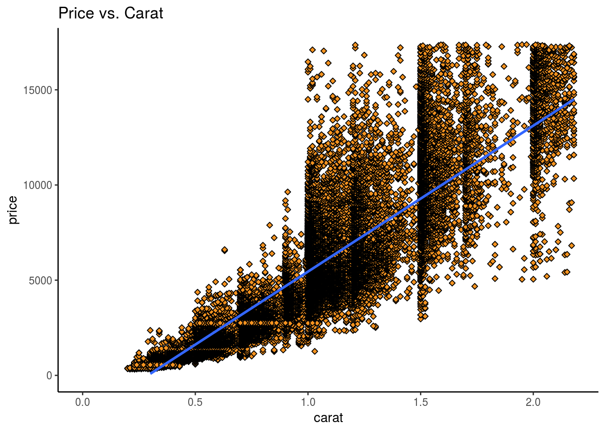
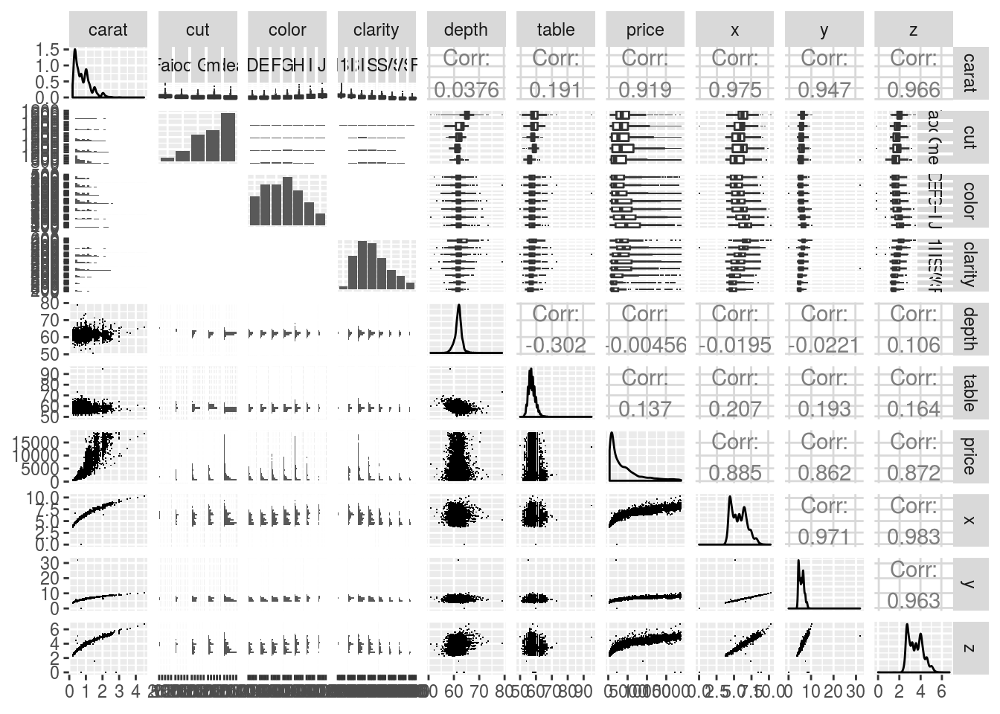
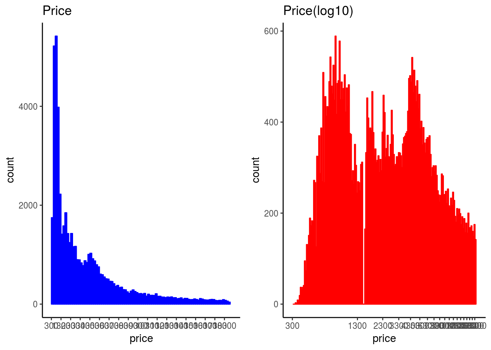
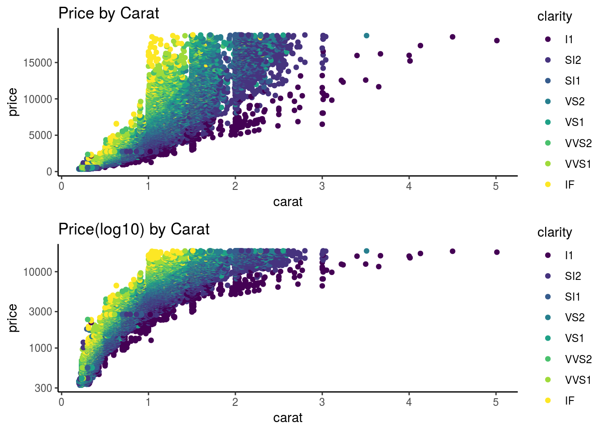
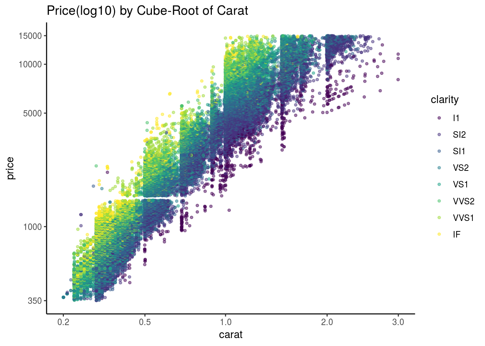
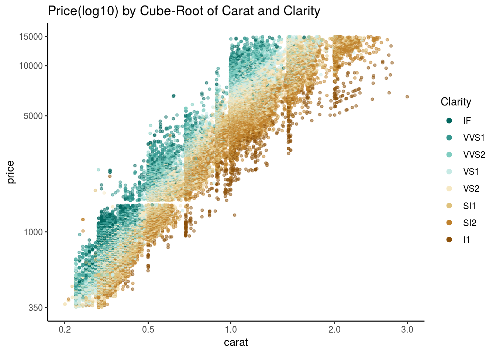
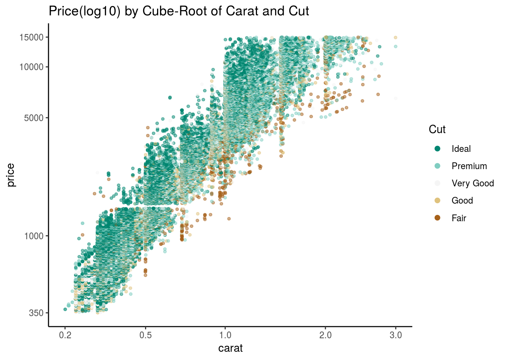
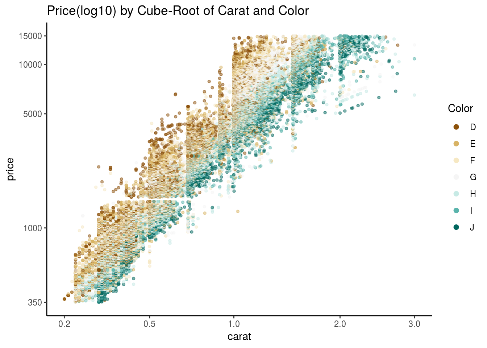
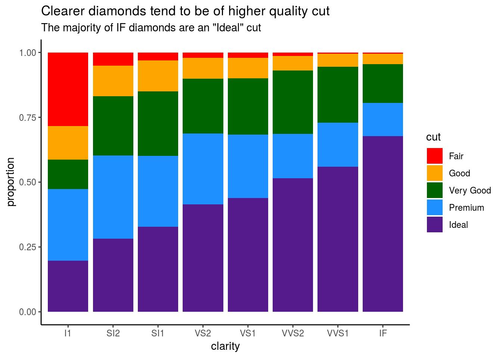

Preamble:
This document focuses on the analysis of the diamonds data frame.
Descriotion of data frame diamonds can be found at https://stat.ethz.ch/R-manual/R-devel/library/datasets/html/diamonds.html
Research questions:
am i getting a fair deal when I purchase a diamond?
The goal is to build a predictive model for diamonds, that is going to help figure out whether a given diamond is a good deal or a rip-off!
Structure of analysis:
I will use Linear Regression to predict the diamond price using other varaibles in the diamonds dataframe.
Get to know the Data
str(diamonds)## Classes 'tbl_df', 'tbl' and 'data.frame': 53940 obs. of 10 variables:
## $ carat : num 0.23 0.21 0.23 0.29 0.31 0.24 0.24 0.26 0.22 0.23 ...
## $ cut : Ord.factor w/ 5 levels "Fair"<"Good"<..: 5 4 2 4 2 3 3 3 1 3 ...
## $ color : Ord.factor w/ 7 levels "D"<"E"<"F"<"G"<..: 2 2 2 6 7 7 6 5 2 5 ...
## $ clarity: Ord.factor w/ 8 levels "I1"<"SI2"<"SI1"<..: 2 3 5 4 2 6 7 3 4 5 ...
## $ depth : num 61.5 59.8 56.9 62.4 63.3 62.8 62.3 61.9 65.1 59.4 ...
## $ table : num 55 61 65 58 58 57 57 55 61 61 ...
## $ price : int 326 326 327 334 335 336 336 337 337 338 ...
## $ x : num 3.95 3.89 4.05 4.2 4.34 3.94 3.95 4.07 3.87 4 ...
## $ y : num 3.98 3.84 4.07 4.23 4.35 3.96 3.98 4.11 3.78 4.05 ...
## $ z : num 2.43 2.31 2.31 2.63 2.75 2.48 2.47 2.53 2.49 2.39 ...summary(diamonds)## carat cut color clarity
## Min. :0.2000 Fair : 1610 D: 6775 SI1 :13065
## 1st Qu.:0.4000 Good : 4906 E: 9797 VS2 :12258
## Median :0.7000 Very Good:12082 F: 9542 SI2 : 9194
## Mean :0.7979 Premium :13791 G:11292 VS1 : 8171
## 3rd Qu.:1.0400 Ideal :21551 H: 8304 VVS2 : 5066
## Max. :5.0100 I: 5422 VVS1 : 3655
## J: 2808 (Other): 2531
## depth table price x
## Min. :43.00 Min. :43.00 Min. : 326 Min. : 0.000
## 1st Qu.:61.00 1st Qu.:56.00 1st Qu.: 950 1st Qu.: 4.710
## Median :61.80 Median :57.00 Median : 2401 Median : 5.700
## Mean :61.75 Mean :57.46 Mean : 3933 Mean : 5.731
## 3rd Qu.:62.50 3rd Qu.:59.00 3rd Qu.: 5324 3rd Qu.: 6.540
## Max. :79.00 Max. :95.00 Max. :18823 Max. :10.740
##
## y z
## Min. : 0.000 Min. : 0.000
## 1st Qu.: 4.720 1st Qu.: 2.910
## Median : 5.710 Median : 3.530
## Mean : 5.735 Mean : 3.539
## 3rd Qu.: 6.540 3rd Qu.: 4.040
## Max. :58.900 Max. :31.800
## Scatterplot
We’ll start by examining two variables in the set. A scatterplot is a powerful tool to help you understand the relationship between two continuous variables.
We can quickly see if the relationship is linear or not. In this case, we can use a variety of diamond characteristics to help us figure out whether the price advertised for any given diamond is reasonable or a rip-off.
Consider the price of a diamond and it’s carat weight.
## create a scatterplot of price and carat
ggplot(diamonds, aes(carat, price)) +
geom_point(fill = I("#F79420"), color = I("black"), shape = 23) +
xlim(0, quantile(diamonds$carat,0.99)) +
ylim(0, quantile(diamonds$price,0.99)) +
ggtitle('Price vs. Carat') +
theme_classic()Observations:
- The larger the diamond is (or the more carats it has), the more expensive the diamond is (price), which is probably what we would have expected.
## create a scatterplot of price and carat with linear trend
ggplot(diamonds, aes(carat, price)) +
geom_point(fill = I("#F79420"), color = I("black"), shape = 23) +
stat_smooth(method = "lm") +
scale_x_continuous(lim = c(0, quantile(diamonds$carat, 0.99)) ) +
scale_y_continuous(lim = c(0, quantile(diamonds$price, 0.99)) ) +
ggtitle("Price vs. Carat") +
theme_classic()
Observations:
- The linear trend line doesn’t go through the center of the data at some key places. It should curve in certain parts of the graph, i.e slope up more towards the end. If we tried to use this for predictions, we might be off some key places inside and outside of the existing data that we have displayed.
## sample 10,000 diamonds from the set to get a snapshop of the large dataframe
set.seed(20022012)
diamond_samp <- diamonds[sample(1:length(diamonds$price), 10000), ]
ggpairs(diamond_samp,
lower = list(continuous = wrap("points", shape = I('.'))),
upper = list(combo = wrap("box", outlier.shape = I('.'))))## `stat_bin()` using `bins = 30`. Pick better value with `binwidth`.
## `stat_bin()` using `bins = 30`. Pick better value with `binwidth`.
## `stat_bin()` using `bins = 30`. Pick better value with `binwidth`.
## `stat_bin()` using `bins = 30`. Pick better value with `binwidth`.
## `stat_bin()` using `bins = 30`. Pick better value with `binwidth`.
## `stat_bin()` using `bins = 30`. Pick better value with `binwidth`.
## `stat_bin()` using `bins = 30`. Pick better value with `binwidth`.
## `stat_bin()` using `bins = 30`. Pick better value with `binwidth`.
## `stat_bin()` using `bins = 30`. Pick better value with `binwidth`.
## `stat_bin()` using `bins = 30`. Pick better value with `binwidth`.
## `stat_bin()` using `bins = 30`. Pick better value with `binwidth`.
## `stat_bin()` using `bins = 30`. Pick better value with `binwidth`.
## `stat_bin()` using `bins = 30`. Pick better value with `binwidth`.
## `stat_bin()` using `bins = 30`. Pick better value with `binwidth`.
## `stat_bin()` using `bins = 30`. Pick better value with `binwidth`.
## `stat_bin()` using `bins = 30`. Pick better value with `binwidth`.
## `stat_bin()` using `bins = 30`. Pick better value with `binwidth`.
## `stat_bin()` using `bins = 30`. Pick better value with `binwidth`.
## `stat_bin()` using `bins = 30`. Pick better value with `binwidth`.
## `stat_bin()` using `bins = 30`. Pick better value with `binwidth`.
## `stat_bin()` using `bins = 30`. Pick better value with `binwidth`.
Observations:
- Price is almost linearly correlated with carat: These are the critical factors driving price.
- Price appears related to cut/color/clarity but, is not very clear from this plot.
- Price appears not to be directly related to depth and table.
## create hist of price and price(log10)
plot1 <- ggplot(diamonds, aes(price)) +
geom_histogram(color = 'blue', fill = 'blue', binwidth = 200) +
scale_x_continuous(breaks = seq(300, 19000, 1000), limit = c(300, 19000)) +
ggtitle('Price') +
theme_classic()
plot2 <- ggplot(diamonds, aes(price)) +
geom_histogram(color = 'red', fill = 'red', binwidth = 0.01) +
scale_x_log10(breaks = seq(300, 19000, 1000), limit = c(300, 19000)) +
ggtitle('Price(log10)') +
theme_classic()
grid.arrange(plot1, plot2, ncol = 2)
Observations:
- Price histogram is skewed to the right, while the log10(price) tends to be a bell curve distributed. Also, the two peaks in the log10(price) plot coincides with the 1st and 3rd quantile of price.
## create scatterplot of price and price(log10)
p1 <- ggplot(diamonds, aes(carat, price, color=clarity)) +
geom_point() +
ggtitle("Price by Carat") +
theme_classic()
p2 <- ggplot(diamonds, aes(carat, price, color=clarity)) +
geom_point() +
scale_y_continuous(trans = log10_trans()) +
ggtitle("Price(log10) by Carat") +
theme_classic()
grid.arrange(p1, p2, ncol=1)
Observations:
- On the log scale, the prices look less dispersed at the high end of carat size and price, however, we can do better. Let’s try using the cube root of carat in light of our speculation about flaws being exponentially more likely in diamonds with more volume. Remember, volume is on a cubic scale!
### create a new function to transform the carat variable
cuberoot_trans = function() trans_new('cuberoot',
transform = function(x) x^(1/3),
inverse = function(x) x^3)
### use the cuberoot_trans function
ggplot(diamonds, aes(carat, price, color=clarity)) +
geom_point(alpha = 1/2, size = 1, position = "jitter") +
scale_x_continuous(trans = cuberoot_trans(), limits = c(0.2, 3),
breaks = c(0.2, 0.5, 1, 2, 3)) +
scale_y_continuous(trans = log10_trans(), limits = c(350, 15000),
breaks = c(350, 1000, 5000, 10000, 15000)) +
ggtitle('Price(log10) by Cube-Root of Carat') +
theme_classic()
Observations:
- The price(log10) is almost linear with cuberoot of carat. We can now move ahead and see how to model our data using just a linear model.
Price vs. Carat and Clarity
## to work around overplotting, the alpha, size, and and jitter options are used in our plot
ggplot(diamonds, aes(x = carat, y = price)) +
geom_point(alpha = 1/2, size = 1, position = 'jitter', aes(color=clarity)) +
scale_color_brewer(type = 'div',
guide = guide_legend(title = 'Clarity', reverse = T,
override.aes = list(alpha = 1, size = 2))) +
scale_x_continuous(trans = cuberoot_trans(), limits = c(0.2, 3),
breaks = c(0.2, 0.5, 1, 2, 3)) +
scale_y_continuous(trans = log10_trans(), limits = c(350, 15000),
breaks = c(350, 1000, 5000, 10000, 15000)) +
ggtitle('Price(log10) by Cube-Root of Carat and Clarity') +
theme_classic()
Observations:
- Clarity factors into the price of a diamond. Hence, a better clarity results in a higher price than lower end clarity.
Price vs. Carat and Cut
## to work around overplotting, the alpha, size, and and jitter options are used in our plot
ggplot(diamonds, aes(x = carat, y = price)) +
geom_point(alpha = 1/2, size = 1, position = 'jitter', aes(color=cut)) +
scale_color_brewer(type = 'div',
guide = guide_legend(title = 'Cut', reverse = T,
override.aes = list(alpha = 1, size = 2))) +
scale_x_continuous(trans = cuberoot_trans(), limits = c(0.2, 3),
breaks = c(0.2, 0.5, 1, 2, 3)) +
scale_y_continuous(trans = log10_trans(), limits = c(350, 15000),
breaks = c(350, 1000, 5000, 10000, 15000)) +
ggtitle('Price(log10) by Cube-Root of Carat and Cut') +
theme_classic()
Observations:
- Whilst cut does not show as obvious pattern as clarity, it’s still clear that with the same carat the diamonds with the best cut are priced higher. Hence, I think cut should be also included in the price prediction algorithm. Note, clarity explains a lot of the variance found in price!
Price vs. Carat and Color
## to work around overplotting, the alpha, size, and and jitter options are used in our plot
ggplot(diamonds, aes(x = carat, y = price)) +
geom_point(alpha = 1/2, size = 1, position = 'jitter', aes(color=color)) +
scale_color_brewer(type = 'div',
guide = guide_legend(title = 'Color', reverse = F,
override.aes = list(alpha = 1, size = 2))) +
scale_x_continuous(trans = cuberoot_trans(), limits = c(0.2, 3),
breaks = c(0.2, 0.5, 1, 2, 3)) +
scale_y_continuous(trans = log10_trans(), limits = c(350, 15000),
breaks = c(350, 1000, 5000, 10000, 15000)) +
ggtitle('Price(log10) by Cube-Root of Carat and Color') +
theme_classic()
ggplot(diamonds) +
geom_bar(mapping = aes(clarity, fill=cut), position = "fill" ) +
scale_fill_manual(values = c("red", "orange", "darkgreen", "dodgerblue", "purple4")) +
labs(title = "Clearer diamonds tend to be of higher quality cut",
subtitle = "The majority of IF diamonds are an \"Ideal\" cut") +
ylab("proportion") +
theme_classic()
Observations:
- This looks similar with previous clarity plot. Color should be also considered as an factor for price.
Build the Linear Model
m1 <- lm(I(log10(price)) ~ I(carat^(1/3)), diamonds)
m2 <- update(m1,~ . +carat)
m3 <- update(m2,~ . +cut)
m4 <- update(m3,~ . +color)
m5 <- update(m4,~ . +clarity)
mtable(m1, m2, m3, m4, m5, sdigits = 4)##
## Calls:
## m1: lm(formula = I(log10(price)) ~ I(carat^(1/3)), data = diamonds)
## m2: lm(formula = I(log10(price)) ~ I(carat^(1/3)) + carat, data = diamonds)
## m3: lm(formula = I(log10(price)) ~ I(carat^(1/3)) + carat + cut,
## data = diamonds)
## m4: lm(formula = I(log10(price)) ~ I(carat^(1/3)) + carat + cut +
## color, data = diamonds)
## m5: lm(formula = I(log10(price)) ~ I(carat^(1/3)) + carat + cut +
## color + clarity, data = diamonds)
##
## ==============================================================================================
## m1 m2 m3 m4 m5
## ----------------------------------------------------------------------------------------------
## (Intercept) 1.225*** 0.451*** 0.380*** 0.405*** 0.180***
## (0.003) (0.008) (0.008) (0.007) (0.004)
## I(carat^(1/3)) 2.414*** 3.721*** 3.780*** 3.665*** 3.971***
## (0.003) (0.014) (0.013) (0.012) (0.007)
## carat -0.494*** -0.505*** -0.431*** -0.474***
## (0.005) (0.005) (0.004) (0.003)
## cut: .L 0.097*** 0.097*** 0.052***
## (0.002) (0.002) (0.001)
## cut: .Q -0.027*** -0.027*** -0.013***
## (0.002) (0.001) (0.001)
## cut: .C 0.022*** 0.022*** 0.006***
## (0.001) (0.001) (0.001)
## cut: ^4 0.008*** 0.008*** -0.001
## (0.001) (0.001) (0.001)
## color: .L -0.162*** -0.191***
## (0.001) (0.001)
## color: .Q -0.056*** -0.040***
## (0.001) (0.001)
## color: .C 0.001 -0.006***
## (0.001) (0.001)
## color: ^4 0.012*** 0.005***
## (0.001) (0.001)
## color: ^5 -0.007*** -0.001*
## (0.001) (0.001)
## color: ^6 -0.010*** 0.001
## (0.001) (0.001)
## clarity: .L 0.394***
## (0.001)
## clarity: .Q -0.104***
## (0.001)
## clarity: .C 0.057***
## (0.001)
## clarity: ^4 -0.027***
## (0.001)
## clarity: ^5 0.011***
## (0.001)
## clarity: ^6 -0.001
## (0.001)
## clarity: ^7 0.014***
## (0.001)
## ----------------------------------------------------------------------------------------------
## R-squared 0.9236 0.9349 0.9391 0.9514 0.9839
## adj. R-squared 0.9236 0.9349 0.9391 0.9514 0.9839
## sigma 0.1218 0.1124 0.1087 0.0972 0.0559
## F 652012.0628 387489.3661 138654.5235 87959.4667 173791.0840
## p 0.0000 0.0000 0.0000 0.0000 0.0000
## Log-likelihood 37025.2108 41356.3916 43150.2943 49222.9505 79078.9821
## Deviance 800.2475 681.5220 637.6655 509.1030 168.2821
## AIC -74044.4217 -82704.7832 -86284.5886 -98417.9011 -158115.9642
## BIC -74017.7348 -82669.2007 -86213.4236 -98293.3623 -157929.1560
## N 53940 53940 53940 53940 53940
## ==============================================================================================Observations:
- We get some very nice R square values. We are accounting for almost all of the variance in price using carat, cut, color and clarity. If we want to know whether the price of a diamond is reasonable, we could use this model.
thisDiamond <- data.frame(carat = 1, cut = 'Very Good',
color = 'G', clarity = 'VS2')
modelEstimate <- predict(m5, newdata = thisDiamond,
interval = "prediction", level = .95)
10^modelEstimate## fit lwr upr
## 1 5232.111 4065.993 6732.668exp(modelEstimate)## fit lwr upr
## 1 41.20984 36.93526 45.97911